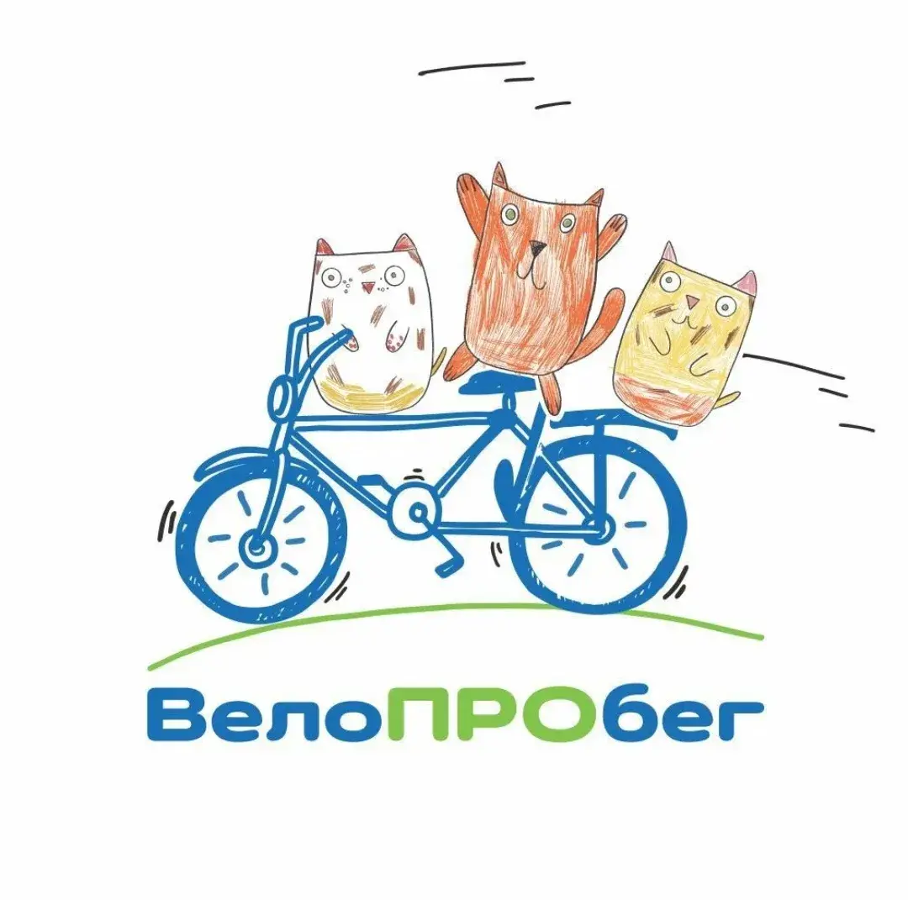

Вело
ПРО
бег
АудиоГид · Зеленоградск → Светлогорск
📱
Отсканируйте QR-код
🚲
QR-код выдаётся при аренде
🔑
Доступ действует 1 сутки
📷
Сканировать QR-код
Наведите камеру на QR-код
Ищу QR-код...
✕ Закрыть
Вело
ПРО
бег
АудиоГид · Зеленоградск → Светлогорск
📍
17 точек маршрута
🛣️
~22 км вдоль Балтики
🔊
Авто-озвучка при приближении
📵
Работает без интернета
Начать маршрут
📲 Установить приложение
Чтобы установить: нажмите
«Поделиться»
(□↑) внизу экрана →
«На экран домой»
📥 Скачать карту для офлайн
Загрузка тайлов…
Вело
ПРО
бег
Зеленоградск → Светлогорск
GPS
0 из 17 точек
~22 км
🗺️
Запуск…
Разрешите доступ к GPS
▶
Слушать
■
☰
📍 Точки маршрута
✕